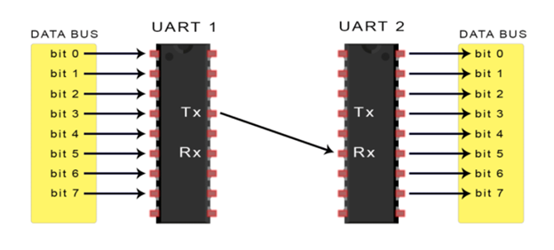
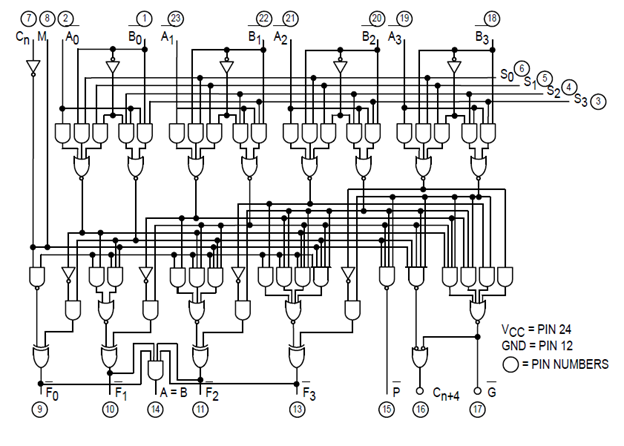
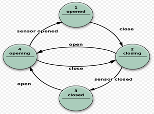

I am a Senior Lead Design Engineer at NXP Semiconductors in Bangalore, specializing in Non-Coherent Interconnect & Last Level Cache Design. Starting Fall 2026, I will be joining the University of Southampton to pursue my MSc in Microelectronics System Design.
Previously, I spent over three years as an Engineer at ARM Ltd., managing core blocks across multiple ARM Non-Coherent Interconnects and driving digital IP integration with communication protocols including AXI4/5, CHI-E, and APB. Earlier, I worked on software-programmable hardware acceleration at AMD (Xilinx), developing high-throughput FPGA kernels using Vitis HLS and OpenCL for Alveo accelerator cards.
Research & Exploration: I am actively interested in advanced research topics across FPGAs, Domain-Specific Hardware Accelerators, Parallel Micro-architectures, and GPU/Heterogeneous Systems.

Professional Experience
- Core member of the Non-Coherent Interconnect & Last Level Cache Design team in Bangalore.
- Partner with system architects and integration teams to drive end-to-end IP micro-architecture and integration.
- Design and implement optimized NIC and NoC topologies to maximize subsystem efficiency and throughput.
- Worked within the Interconnect and SoC Design team, managing key blocks across multiple ARM Non-Coherent Interconnects.
- Engineered synthesizable RTL wrappers for digital IPs and created validation testbenches.
- Hands-on expertise with communication protocols: AXI4/5, CHI-E, APB, and UART.
- Executed static lint analysis and functional simulations using Mentor QuestaSim, Synopsys VCS, and Visualizer.
- Collaborated with the Software Programmable Acceleration team to design high-performance hardware kernels.
- Developed accelerated IPs using Vitis HLS and Vitis Unified Software Platform for AMD Alveo (U200, U250) and Versal (VCK190) devices.
- Utilized OpenCL to offload compute-bound workloads from host CPUs to FPGA accelerators.
- Engineered FPGA-accelerated IPs in the Vitis Unified Software Platform, Vitis HLS tools, and AMD Vivado.
Leadership & Community Initiatives
- Served as student leader for RTRA, Lovely Professional University's premier robotics and aeromodelling student organization.
- Organized international competitions and technical webinars, guiding and enabling 100+ students to participate in national techfests across India.
- Represented Techfest, Asia’s largest annual science and technological festival organized by IIT Bombay.
- Promoted technical challenges, workshops, and competitions, driving a 30% increase in total student participation over preceding years.
- Led the hardware team in circuit engineering for robotics and electronics challenges at IIT Jodhpur's annual techfest.
- Achieved 1st Position in Electronics Challenge and 3rd Position in Robotics Challenge.
RTL & Hardware Projects

Output-Stationary Pipelined Systolic GEMM Accelerator
Parametrized pipelined Processing Element (PE) architecture with Stage-0 input capture and Stage-1 multiply-accumulate. Features a dataflow sampling controller, Ping-Pong matrix buffer, and streaming output collector. Synthesized and validated on AMD Vivado.
Verilog / Vivado
4-bit Pipelined Arithmetic Logic Unit (ALU)
Micro-architectural design of a 4-bit ALU supporting arithmetic, logical, and shift operations. Developed synthesizable Verilog RTL with operation decoding, validated on FPGA hardware.
Repository →
Verilog UART Communication Protocol
Synthesizable hardware implementation of Universal Asynchronous Receiver-Transmitter protocol with configurable baud rate generation and parity error detection.
Repository →Technical Skills
- Hardware Design & Verification: Verilog, SystemVerilog, RTL Micro-architecture, Linting, Static Timing Analysis (STA), 8085 Microprocessor, CMOS Technology.
- Interconnects & Protocols: Non-Coherent Interconnects (NIC), NoC, Last Level Caches (LLC), AXI4/AXI5, CHI-E, APB, UART.
- Computer Architecture & Acceleration: Caches, Atomics, Pipelining, Systolic Arrays (GEMM), SIMD/SIMT, FPGAs, AMD Alveo (U200/U250), OpenCL.
- EDA Tools & Languages: Xilinx Vivado, Vitis HLS, Mentor QuestaSim, Synopsys VCS, Visualizer, Sentaurus TCAD, Python, C++, Linux.
Education & Honors
Advanced study focusing on micro-architecture, advanced SoC design, and domain-specific hardware accelerators.
Lovely Professional University, Jalandhar • CGPA: 8.15 / 10.0
Awarded for unwavering dedication, focus on results, and engineering excellence during my first year at ARM Ltd.
Bagged 1st position in Electronics Challenge and 3rd position in Robotics Challenge as Technical Head & Circuit Designer.